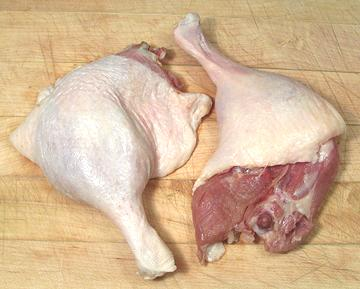

Duck Legs

Duck legs differ from chicken legs in being short and wide, and with
relatively little fat. They are reasonably economical and your best bet
for getting duck meat without much fat. They always come with the thigh
because the thigh isn't large enough to sell as a separate cut as with
chicken. A duck leg/thigh weighs about 8.5 ounces.
More on Working with Ducks.
Buying:
Find duck legs in markets serving a Chinese or
Southeast Asian community, generally in the frozen meat section. They are
sold with the thigh attached because the thigh is not large enough to be
sold as a separate cut. They are reasonably available because the major
market is for duck breast, but each duck comes with two legs as well.
Prep:
Duck legs are a little more difficult to debone and
disjoint than chicken legs because the joints are much tighter and there
is almost no cartilage. If you remove the skin, it has to be carefully
cut loose with a sharp knife because it adheres much more tightly to the
flesh than with chicken. An 8.5 ounce leg/thigh will yield 4.5 ounces
(53%) of skinless boneless meat. It will yield only 1.1 oz (13%)
renderable fat
Cooking:
Duck legs and thighs can be used similarly to
chicken legs and thighs but need to be cooked at least twice as long or
they will be tough. If you are not including the skin in your recipe you
can render the fat from it in a small frying pan, and eat the cracklings
as a snack. The fat is prized for cooking.
bd_dklegz 090704 - www.clovegarden.com
©Andrew Grygus - agryg@clovegarden.com - Photos on this
page not otherwise credited are © cg1 -
Linking to and non-commercial use of this page permitted